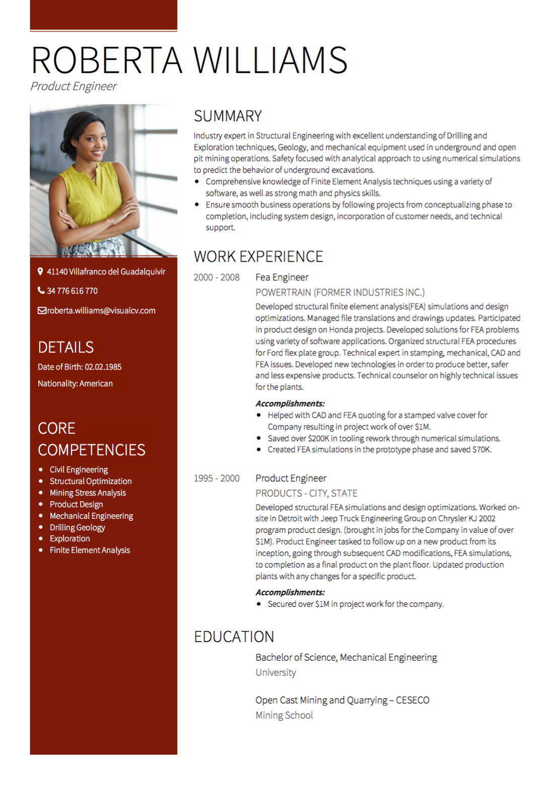

Espagne CV
Conseils et conditions
Vous cherchez un emploi en Espagne? Ce guide contient les astuces, exemples et conditions nécessaires pour rédiger le CV espagnol parfait. Créez votre CV aujourd'hui!

Vous cherchez un emploi en Espagne? Ce guide contient les astuces, exemples et conditions nécessaires pour rédiger le CV espagnol parfait. Créez votre CV aujourd'hui!
Votre CV en Espagne devrait inclure un historique de travail robuste, une éducation détaillée, une photo, vos coordonnées et votre date de naissance. Il fait partie intégrante de votre recherche d'emploi en espagnol que votre CV ne se distingue pas pour de mauvaises raisons - il devrait être attirant car il s'agit d'un CV génial, non pas parce qu'il manque des informations clés.

Longueur: Pas plus de deux pages sont nécessaires dans votre CV pour l'Espagne.
Mise en page: utilisez des rubriques claires et des sections - vous souhaitez que les employeurs et les recruteurs puissent analyser votre CV rapidement et efficacement.
Photo: “En Espagne, il est très normal d'inclure une photo sur votre CV”, selon Spanish Town Guides . Une image directement sur le CV est idéale, mais vous pouvez inclure une image séparément si nécessaire.
Renseignements personnels: Près du haut de votre CV, incluez votre nom, date de naissance, nationalité, adresse complète, numéro de téléphone et adresse électronique.
Résumé personnel : Un résumé personnel n'est pas nécessaire, mais si vous souhaitez inclure quelques lignes décrivant brièvement votre historique de carrière ou votre objectif de carrière, cela est acceptable.
Expérience de travail: Écrivez votre expérience de travail dans un ordre chronologique inverse. Utilisez cette section pour vous vendre et votre expérience - mettez l'accent sur vos réalisations, mais assurez-vous d'inclure également vos responsabilités. Utilisez des points de balle pour que votre historique de travail soit organisé et facile à lire.
Éducation: Présentez vos études , y compris le nom de l'université, le domaine d'études et toutes les certifications ou diplômes que vous avez obtenus. Sauf si vous êtes un diplômé récent, assurez-vous que cette section ne surpasse pas votre historique de travail - selon cvrite , «Si vous avez travaillé pendant plus de trois ans, il est généralement préférable d'inclure« Carrière historique »d'abord, suivi de« Éducation ».
Compétences : Une section de compétences où vous fournissez une brève liste d'activités dont vous avez l'expérience est une bonne addition à tout CV. Cette section peut montrer efficacement vos points forts.
Expérience bénévole: une section bénévole peut être un atout majeur pour votre CV. Cela montre que vous êtes bien équilibré et que vous avez de l'intérêt et de l'expérience dans différents domaines.
Langues: tant qu'il y a de l'espace sur votre CV, énumérez toutes les langues que vous maîtrisez.
Références: il est acceptable d'inclure quelques références sur votre CV. Plus ils sont impressionnants, plus leur inclusion sera impressionnante. Si vous préférez, il est également acceptable de laisser cela , en fournissant des références uniquement lorsque vous l'avez demandé.
En Espagne, comme dans de nombreux pays d'Europe, une photo et une date de naissance sont attendues sur votre CV. Les exigences spécifiques d'un CV varient d'un pays à l'autre - en respectant les règles et les conseils ci-dessus est un excellent moyen de s'assurer que votre CV répond aux attentes des employeurs espagnols.